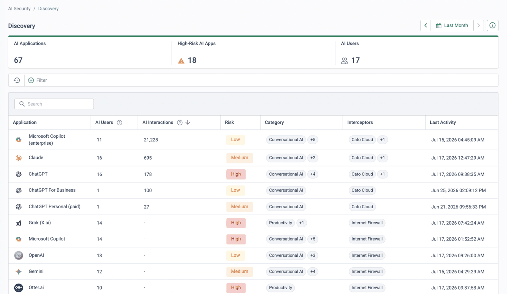
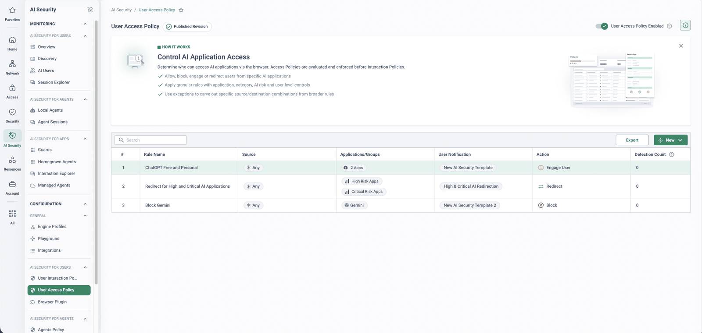
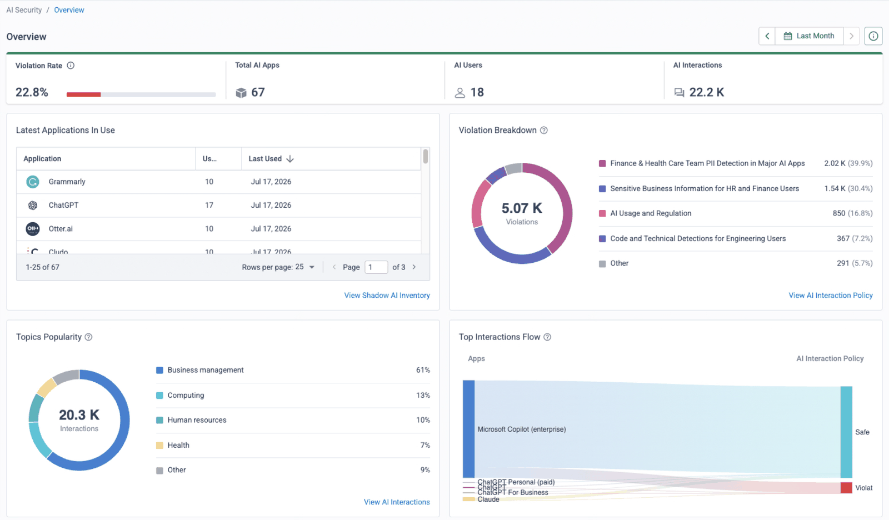
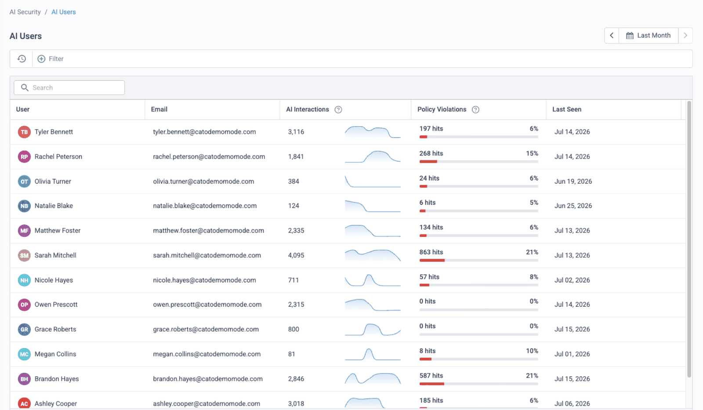
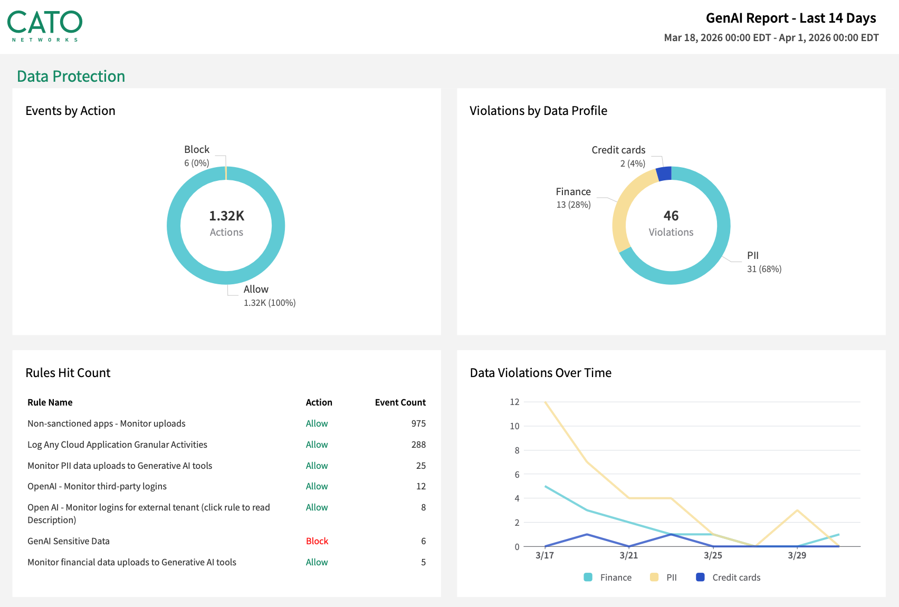
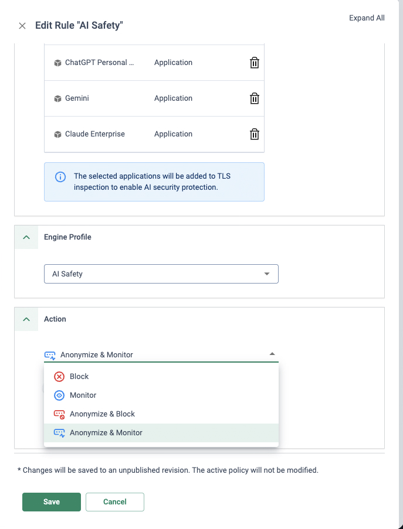
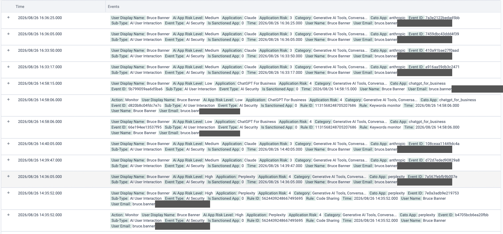
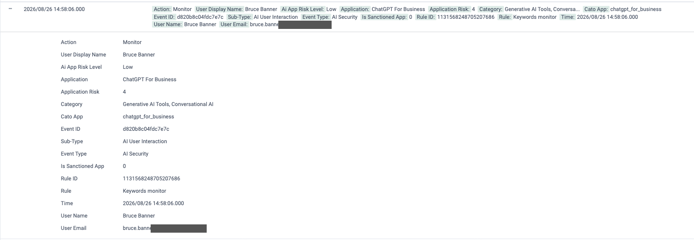

Why this lands now
This page is authored from sourced research current to July 2026, with the omnibus status rechecked on 31 October 2026. It is not legal advice, and the regulatory picture is still moving. Validate obligations, dates and interpretations with the customer's counsel before using this in a compliance conversation.
Regulation (EU) 2024/1689 — the AI Act — entered into force on 1 August 2024 and applies in phases. Prohibited practices (Art 5) and the AI-literacy duty (Art 4) have applied since 2 February 2025; GPAI-provider rules, governance bodies and the penalties chapter since 2 August 2025. Since 2 August 2026 the Act has been in general application — but what actually started then was reshaped weeks beforehand by the "Digital Omnibus on AI", a package of targeted amendments the Commission proposed on 19 November 2025. The omnibus completed its legislative journey in mid-2026: political agreement on 7 May 2026, European Parliament adoption on 16 June 2026 and final Council approval on 29 June 2026. It was published in the Official Journal on 24 July 2026 as Regulation (EU) 2026/1744 and entered into force three days later, on 27 July 2026.
So the headline for a deployer is nuanced, not relaxed. The heavy Art 26 duty set for Annex III high-risk systems now applies from 2 December 2027 — but since 2 August 2026 the transparency obligations of Art 50 have applied (with a marking grace period to 2 December 2026 only for systems already on the market before 2 August 2026), the Commission can fine GPAI model providers, supervision of the AI-literacy duty has begun, and member-state market-surveillance and penalty machinery is switched on for the generally-applicable provisions. As one law-firm analysis put it: August 2 still matters — the extra sixteen months on high-risk are runway, not cancellation. The runway is for building the evidence machine: inventory, usage control, logging and oversight.
Who you are under the Act decides what you owe
The Act distributes duties across providers (who develop an AI system or place it on the market), deployers (who use an AI system under their own authority in a professional context), importers and distributors (Art 3). Almost every enterprise is a deployer many times over — of GenAI SaaS, of AI features embedded in everyday software, of internal tools built on GPAI models. Notably, using ChatGPT, Copilot or Gemini does not make you a GPAI provider: the Chapter V model obligations fall on model providers only. A deployer meets GPAI through Art 50 transparency, Art 4 literacy and — if a GPAI-based system is used in a high-risk context — Art 26.
When a deployer becomes a provider (Art 25)
A deployer inherits the full provider duty set for a high-risk system — conformity assessment included — if it (a) puts its name or trademark on the system (subject to any contractual allocation of obligations), (b) makes a substantial modification to it while it remains high-risk, or (c) changes the intended purpose of a non-high-risk system so it becomes high-risk. White-labelling or heavily customising third-party AI can silently cross that line — one more reason to know exactly which AI is in use, and how.
The UK and extraterritorial angle (Art 2)
The Act does not apply domestically in the UK — but Art 2(1)(c) catches providers and deployers established in a third country "where the output produced by the AI system is used in the Union". A UK enterprise running AI over EU customers or staff, or feeding AI output into EU operations, is in scope through that output-based trigger — the one that most often surprises UK boards.
“Who owns EU AI Act readiness — legal, compliance, the CISO — and do they have a complete inventory of the AI actually in use, including AI features embedded inside your sanctioned SaaS?” · “Have you classified any of your AI uses against the Act's risk tiers — and could any team's customisation of a third-party tool push you from deployer into provider territory?” · “If a regulator asked tomorrow which AI systems process EU customer data, how long would the answer take?”
The price of not knowing
The penalties chapter (Art 99) has applied since 2 August 2025, in three tiers — for SMEs and startups the lower of the amount or percentage applies; for everyone else, the higher:
Since 2 August 2026, the Commission can additionally fine GPAI model providers up to €15M or 3% of global turnover (Art 101) — a provider-side risk, but one that reshapes the vendor landscape a deployer depends on. Enforcement capacity is uneven: per the AI Act Explorer implementation tracker (last updated 17 June 2026, still its latest revision at end-October 2026), only 9 member states had fully designated both national competent authorities, 12 partially and 6 not at all — a delay the Commission itself cited among the reasons for the omnibus deferral. The Commission's own list of market-surveillance single points of contact (last updated 7 September 2026) tells the same story after the enforcement start: 9 member states confirmed, 12 with the national designation still pending final adoption, and 6 — Austria, Belgium, Bulgaria, Croatia, Hungary and Slovakia — with no contact listed. Uneven does not mean absent: the machinery for the generally-applicable provisions has been live since 2 August 2026.
And readiness on the deployer side is worse than most boards assume. A Cloud Security Alliance research note (13 March 2026) found that over half of organisations lack systematic AI inventories, and cited an appliedAI analysis of 106 enterprise AI systems in which 40% could not be clearly classified under the Act's risk tiers. Its recommendation to deployers is exactly where this use case starts: audit the deployer obligations for third-party AI systems already in use, and verify human oversight and logging.
Deployer obligations — what Cato evidences, what stays with governance
Cato does not make anyone “AI Act compliant” — risk classification, fundamental rights impact assessments, conformity assessment and documentation are the customer's governance programme. What the platform contributes is the layer every one of those workstreams presupposes: knowing which AI is in use, controlling how it is used, and evidencing both.
| Obligation | What it asks of a deployer | What Cato evidences / enforces | Stays with governance |
|---|---|---|---|
| Art 4 — AI literacy applies since 2 Feb 2025 · enforced from 2 Aug 2026 |
Take measures to support the development of AI literacy among staff operating AI (omnibus-softened wording). | Real-time user notifications on risky AI interactions are teachable moments; usage and violation data shows exactly which teams and tools to target training at. | The literacy programme itself — training content, delivery and records are HR/L&D territory. |
| Art 5 — Prohibited practices apply since 2 Feb 2025 |
Never operate prohibited systems — for deployers, most saliently workplace/education emotion inference and untargeted facial-image scraping. The Commission's Feb 2025 guidelines note the workplace emotion-recognition ban binds the deployer regardless of the provider's contract terms. | Block access to services and categories your organisation has classified as prohibited-use, and evidence non-use from the event stream. | The legal classification of a practice as prohibited — and any exception analysis — is a legal call. |
| Art 50 — Transparency applies from 2 Aug 2026 |
Inform people exposed to emotion-recognition / biometric-categorisation systems; disclose deepfakes; disclose AI-generated public-interest text unless under human editorial control. | Cannot label content or make disclosures on your behalf. The AI inventory shows which content-generating tools are in use — scoping exactly where labelling and disclosure processes are needed. | The disclosure and labelling processes themselves, and Art 50 GDPR interplay. |
| Art 26 — High-risk deployer duties Annex III systems: from 2 Dec 2027 |
Use per the provider's instructions; assign competent human oversight; ensure relevant, representative input data; monitor operation and report incidents; keep the system's automatically generated logs ≥ 6 months; inform workers before workplace use. | Restrict which users and groups can reach which AI system (oversight support); prompt-level input discipline via the User Interaction Policy; continuous usage monitoring with per-user attribution; supporting audit evidence, exportable. | Instructions-for-use compliance, the oversight arrangements themselves, the AI system's own log retention, worker consultation, registration checks. |
| Risk classification · FRIA (Art 27) · conformity assessment · documentation · DPIAs | Classify each AI use against the risk tiers; run fundamental-rights impact assessments where required; hold the documentation. | — (the discovered inventory is the input these exercises start from; Cato claims none of them) | Entirely — this is the AI governance programme, typically legal / compliance / DPO owned. |
Art 26 requires a high-risk deployer to keep the AI system's own automatically generated logs — to the extent those logs are under its control — for at least six months. Network events are supporting evidence of who used which AI service, when, and what policy decided — never a substitute for the AI system's logs. And mind the window: Cato Data Lake event retention defaults to 3 months, extendable by licence to 6- or 12-month Data Lake units for contracts and renewals from 1 January 2024 (Cato KB Guide to Cato Data Lake; some contracts carry different terms, so confirm the tenant's own retention) — so for a six-month-plus evidence window, plan a retention extension or continuous export to the customer's SIEM.
Where this sits in the Cato SASE platform
- EU sites, the hybrid workforce and UK users whose AI output is used in the EU all cross a Cato PoP.
- Shadow AI Discovery builds the deployer's AI inventory passively, without reading prompt content.
- The User Interaction Policy allows, anonymises or blocks per prompt; org-classified prohibited use is blocked.
- Events, the Audit Trail and SIEM export are supporting evidence; risk classification stays with governance.
Discover the estate, govern the prompt, keep the evidence
Shadow AI Discovery builds the inventory the whole readiness programme starts from. It identifies AI services at network level using a combination of application signatures, domains and behavioural patterns — catching standalone AI tools and AI models embedded inside everyday SaaS (such as Microsoft 365 Copilot or Google Workspace AI features), with user and device context, usage frequency and volume, and risk attributes per application. It is deliberately passive: it does not block traffic by default and does not inspect the content of prompts or responses — discovery first, policy second. The GenAI Apps Dashboard turns that into a management view: how many GenAI tools are in use, sanctioned versus unsanctioned, risk-scored applications, top users, data violations and file uploads per app.

The User Interaction Policy is the control point for how people actually use AI. It inspects prompts to AI chat applications in real time as they cross a Cato PoP and enforces a per-interaction decision — Block, Monitor, Anonymize and Monitor or Anonymize and Block — with DLP-style content detectors, per-user and per-group scoping, per-app granularity, user notification templates and event logging. It requires TLS inspection: if the customer has not enabled it yet, run the staged rollout in TLS Inspection: Staged Rollout Playbook first. Beneath it, Cato's recommended DLP configuration for AI apps backstops file uploads and pastes against the Generative AI Tools category.


Inventory before classification
Shadow AI Discovery finds standalone tools and embedded AI features from traffic Cato already processes — closing the inventory gap the CSA found in over half of organisations, with nothing deployed.
Policy at prompt level
Block, Monitor, Anonymize-and-Monitor or Anonymize-and-Block per interaction, per user, per app — usage control that matches how the Act thinks about AI use, not domain-level yes/no.
Prohibited-use categories enforced
Once legal classifies a practice or service as off-limits — a workforce emotion-analytics SaaS, say — the network blocks it everywhere and the event stream evidences non-use.
Evidence, attributable and exportable
Unified events with per-user attribution, CSV export up to 250k events, SIEM export and a full Audit Trail of policy changes — the supporting-evidence layer under the governance file.
Say “Cato supports your AI Act readiness programme” — never “Cato makes you AI Act compliant”. Risk classification, FRIAs, conformity assessment and documentation belong to the customer's governance programme. Cato is the visibility, control and evidence layer underneath it.
How to run the demo
Ask who owns AI Act readiness and what their inventory looks like today. Most programmes stall at step one — nobody can list the AI actually in use. Lead with discovery, and let the obligation-mapping table frame the rest.
-
Frame with the timeline and the mapping table
Walk the three dates — from 2 Aug 2026, from 2 Dec 2027, from 2 Aug 2028 — and the obligation table. Agree which obligations the people in the room own. Anchor: “every row starts with knowing which AI is in use — that's the row we can light up today.”
-
Open on the AI Security Overview
AI Security → Monitoring → Overview
Walk the tiles — total AI apps, AI users, AI interactions — and the violation rate as the one-number posture indicator. The app count is usually multiples of what the customer believes; that gap is their inventory problem, quantified.
-
Walk the shadow-AI inventory
AI Security → Discovery
Show the discovered inventory: each application with users, interactions, risk level, category and last activity — including embedded AI features inside sanctioned SaaS. Stress how it got there: network-level discovery from traffic Cato already processes, nothing blocked by default, prompt content untouched.
-
Make it attributable — the AI Users page
AI Security → AI Users
Sort by policy violations and drill into one user: interactions, safe-versus-violation split, applications used. This is the human-oversight supporting view — who is using what, and who needs the literacy conversation Art 4 asks you to support.
-
Build a User Interaction Policy rule
AI Security → User Interaction Policy
Walk a rule end to end: source users or groups, AI applications in scope, the content profile, the action — Monitor, Anonymize and Monitor, Anonymize and Block, or Block — and a notification template so the user learns the policy in the moment. Note the prerequisite: TLS inspection enabled (Security → TLS Inspection).
-
Show the evidence trail
Monitor → Events
Filter to AI-related events: every monitored, anonymised and blocked interaction with user attribution, exportable to CSV (up to 250k events) or streamed to the customer's SIEM. Be straight about the caveat: this is supporting evidence — Art 26's six-month log duty covers the AI system's own logs, and default Data Lake retention is 3 months unless extended.
-
Close on governance evidence
Administration → Audit Trail
Show who changed which AI policy, when, from where. Close: “you arrived without an AI inventory; you're leaving with one, plus per-prompt usage control and an exportable evidence trail under every row of that obligation table.”
How to prove it in the customer's tenant
Be honest about what this PoV is: AI Act readiness has no toggle to demonstrate. What you can prove — measurably, on the customer's own traffic — is that the platform delivers the visibility, control and evidence layer the obligation table above presupposes. So this pilot is a readiness-evidence engagement: each success criterion maps to a row of that table, the customer's AI-governance owner agrees the criteria before anything is configured (per Running a Cato PoV), and the wrap-up hands over an inventory, a working control set and a supporting-evidence pack — with the "stays with governance" column handed back explicitly, not quietly absorbed. Say the position-with-care caveat out loud at the workshop: Cato supports the readiness programme; nothing in this pilot makes anyone AI Act compliant, and none of it is legal advice.
| Success criterion | What we deliver | Evidence artefact | Obligation-table row it lights up |
|---|---|---|---|
| The AI inventory, delivered from traffic | Within the discovery week, a per-application inventory of the AI actually in use — standalone tools and embedded SaaS AI features — with users, interactions, risk attributes and last activity, from traffic Cato already processes; nothing deployed, nothing blocked, prompt content untouched | Dated Discovery capture plus the GenAI report PDF, filed as the pilot's first exhibit | The deployer's first AI Act answer — the input risk classification, Art 26 scoping and Art 50 scoping all start from |
| Access tiering enacted, monitor-first | A published User Access Policy rulebase mirroring the pattern shown above: engage users on personal tiers of a sanctioned assistant, redirect high- and critical-risk AI apps to approved alternatives, block only what the customer's own classification puts off-limits — each rule with a user notification, promoted only after detection counts prove the match | Published rulebase capture with per-rule detection counts; access events from the pilot window | Art 26 — "restrict which users and groups can reach which AI system"; Art 5 — evidenced non-use of org-classified prohibited services |
| Prompt-level input discipline demonstrated | One User Interaction Policy rule on an agreed pilot group: Monitor with a notification template first, then Anonymize and Monitor once a week of events proves the detector matches the right things — sensitive values masked in-flight, the prompt still answered | The rule as published, plus anonymised-interaction events attributed to fictional pilot users | Art 26 — input-data discipline via the User Interaction Policy |
| Supporting-evidence pack, retention answered | Weekly attributed event exports, a recurring GenAI report PDF and an Audit Trail extract — assembled as the pilot runs, with the retention caveat handled in writing: default Data Lake retention is 3 months, extendable by licence, against Art 26's ≥ 6-month window for the AI system's own logs, so the pack must demonstrate the extension-or-export answer, not promise it | The pack itself, plus a one-page retention plan (licence extension or continuous SIEM export) accepted by the customer | Art 26 — supporting audit evidence, exportable; the retention caveat above, demonstrated rather than footnoted |
| Governance handoff completed | A readout that sorts every finding into the obligation table's two columns: what the platform now evidences and enforces, and what stays with governance — risk classification, FRIAs, conformity assessment, documentation, the literacy programme, Art 50 disclosure processes — handed to the named AI-governance owner with the inventory as their starting input | The handoff note, presented at the wrap-up meeting booked at the workshop | The "stays with governance" column — those rows stay theirs, and the pilot says so in writing |
- A named AI-governance owner — legal, compliance or the CISO, whoever owns AI Act readiness — in the workshop choosing the criteria. The handoff criterion needs an addressee; without one, findings land on nobody's desk.
- AI Security licensed for the pilot group — the AI Security for End Users capability behind Discovery, the dashboards and both AI policies; confirm scope with the account team before criteria are signed.
- TLS inspection staged first — the User Interaction Policy requires TLS inspection enabled at the account level; discovery works without it, prompt inspection does not. If the customer has not enabled it, run TLS Inspection: Staged Rollout Playbook before week one, with TLSi scope approved by whoever owns privacy.
- Internet Firewall inspecting the traffic, with the default QUIC rule enabled — the KB's second prerequisite alongside TLSi (Working with the User Interaction Policy). The policy only sees prompts that arrive as inspectable TLS; a browser or app allowed to use QUIC over UDP bypasses inspection entirely. Cato creates the QUIC and GQUIC block rules the first time TLS inspection is switched on — confirm nobody has since disabled them, in the same pass as the TLSi scope sign-off.
- Identity integration syncing — evidence must read "Priya did this", not "an IP did this"; see Identity Integration Design.
- The retention question asked in week one — check the tenant's Data Lake retention SKU on day one, not at the readout, so the extension-or-export answer is demonstrated inside the pilot window.
Configuration walkthrough — one step per criterion
-
Workshop the criteria against the obligation table
One session before anything is configured. Put the deployer-obligation table on screen and let the AI-governance owner pick which rows the pilot will light up — then write each as a measurable criterion with an artefact and an owner, and book the wrap-up readout in the same meeting, per the PoV framework. Agree the pilot group and the sanctioned-versus-off-limits app classification here too: the access tiering in step 3 enforces their classification, never our guess.
-
Deliver the inventory — the discovery week
AI Security → Discovery Home → Reports
Let Shadow AI Discovery run on the traffic Cato already processes — it is deliberately passive: nothing blocked by default, prompt content untouched. At the end of the week, capture the Discovery inventory dated, and from the Reports Catalog generate the GenAI report — usage, data protection and per-user application sections in one vendor-generated PDF — and set it recurring weekly for the rest of the pilot. This is the deployer's first AI Act answer, and the app count is usually multiples of what the customer believes.
-
Enact access tiering — engage, redirect, block
AI Security → User Access Policy
Build the rulebase the screenshot above shows, on the customer's own classification: engage users on free and personal tiers of the sanctioned assistant, redirect high- and critical-risk AI applications to the approved alternative, and block only named services their governance call has already put off-limits — each rule carrying a user notification template, so the policy teaches as it enforces. Access rules are evaluated before Interaction Policy rules, so keep this rulebase coarse (who reaches what) and leave content decisions to step 4. Monitor-first discipline: start with the engage action, watch the per-rule detection counts accumulate, and promote a rule to redirect or block only when the counts prove it matches what the workshop intended.
-
Demonstrate input discipline — one interaction rule
AI Security → User Interaction Policy Security → TLS Inspection
One rule, on the agreed pilot group and the agreed applications: source, AI apps in scope, an engine profile for the content classes the customer worries about, action Monitor with a notification template (working with the User Interaction Policy). After a week of events proves the detector matches the right prompts, flip the action to Anonymize and Monitor: sensitive values masked in-flight, the prompt still answered, the user still productive. Note the boundaries as you build: TLS inspection must be enabled at the account level for prompt inspection (with the Internet Firewall's default QUIC rule left enabled, or a browser that negotiates QUIC sends the prompt over UDP where it cannot be inspected), and the API-based integration module supports monitoring actions only.
-
Assemble the pack as the pilot runs
Monitor → Events Home → Reports Administration → Audit Trail
Weekly, not at wrap-up: export AI-related events per criterion (up to 250,000 events per export, 31-day maximum query range), file the recurring GenAI report PDF, and extract the Audit Trail for the pilot window — every AI policy change, attributed, with previous and new values (the trail holds 12 months, viewable up to 3 months at a time). Then close the retention criterion in writing: this tenant's Data Lake window today, the extension SKU or the continuous SIEM export that reaches the ≥ 6-month Art 26 horizon, and which of the two the customer chooses.
-
Run the governance handoff
AI Security → Monitoring → Overview
At the readout, open on the Overview — apps, users, interactions, violation rate — then walk the criteria table row by row with its artefacts. Close on the two-column sort: what the platform now evidences and enforces stays running; risk classification, FRIAs, conformity assessment, documentation, the literacy programme and Art 50 disclosure processes go to the AI-governance owner, with the discovered inventory as their input. The strongest close is the honest one: "these rows are yours — here is the evidence layer under them."
What good output looks like





Troubleshooting — where this pilot actually goes wrong
Inventory looks thin
Discovery only sees traffic that crosses Cato. If the app count looks low, check the pilot cohort is actually routing through the platform — sites behind Sockets, remote users on the Client — and give it a full working week before judging; a Friday-afternoon capture is not an inventory.
Interaction rule matches nothing
Prompt inspection requires TLS inspection enabled at the account level — the account-wide setting, not a per-application TLSi rule. If interaction events aren't landing, check that setting and that the pilot user's traffic actually crosses a PoP before touching the rule: interaction rules take precedence over TLSi bypass rules, so an exclusion for the AI app is not the cause, but a device that never reaches Cato is invisible at prompt level however correct the rule — the coverage problem from the first card, not a policy one. Second check: the Internet Firewall's default QUIC block rule is still enabled — with it off, the browser and the AI app can talk QUIC over UDP and the prompt is then never TLS-inspected, so the policy never sees it.
Detector coverage boundaries
An inventory row is not automatically an enforcement row: the User Interaction Policy governs supported AI chat applications, embedded AI features inside SaaS are discovered but not all prompt-inspectable, Anonymize applies where the detector supports it, and the API-based integration is monitor-only. Scope criterion 3 to supported apps at the workshop — never promise prompt control over the whole inventory.
Evidence windows expire
An Events query spans at most 31 days and Data Lake retention defaults to 3 months — evidence must be exported as the pilot runs, not reconstructed at the readout. The weekly export cadence in step 5 is the fix; the Audit Trail's 12 months is the safety net, not the plan.
Blocking sends usage dark
Block a tool people rely on and they move to personal devices and accounts — the inventory starts lying exactly when the readiness programme needs it truthful. That is why the tiering starts at engage and redirect, and why block is reserved for what the customer's own classification already prohibits.
Attribution reads as IPs
If events show addresses instead of names, the identity sync is lagging or the pilot group isn't mapped — fix it in week one, because "supporting evidence" that cannot name the user supports very little. Check the IdP connection and group membership before the first export.
Gotchas & exit
- Supporting evidence, never compliance. Network events are supporting evidence of who used which AI service, when, and what policy decided — never a substitute for the AI system's own automatically generated logs that Art 26 requires a high-risk deployer to keep for at least six months. And Cato does not make anyone "AI Act compliant": risk classification, FRIAs, conformity assessment and documentation belong to the customer's governance programme, exactly as the obligation table draws it.
- Not legal advice, and dates move. This page's regulatory content is researched to July 2026; the omnibus has since been published (Regulation (EU) 2026/1744, OJ 24 Jul 2026) — quote the timeline only as the page states it, and have the customer validate obligations, dates and interpretations with counsel before any of this enters a compliance file.
- The retention caveat is a pilot deliverable, not small print. Default Data Lake retention is 3 months, extendable by licence; Art 26's window for the AI system's logs is at least six months. A pilot that hasn't produced the written extension-or-export answer has failed criterion 4, however good the dashboards looked.
Exit: unwind is small and itself evidenced. Return the interaction rule to Monitor or disable it, disable the pilot access rules, and stop the recurring report — every removal lands in the Audit Trail as a tidy closing exhibit of change control. Discovery was passive throughout, so there is nothing to roll back on the inventory side. The inventory, the pack and the retention plan leave with the AI-governance owner as their assets: the inventory becomes the working paper for risk classification, and the criteria table becomes the skeleton of the readiness file the Act will eventually ask them to open.
Resources
Documentation
The regulation
- Regulation (EU) 2024/1689 — official text (EUR-Lex)
- Regulation (EU) 2026/1744 — the Digital Omnibus on AI (EUR-Lex)
- Art 26 — deployer obligations (AI Act Explorer)
- Art 50 — transparency obligations
- Art 99 — penalty tiers
- National implementation tracker
- Market-surveillance single points of contact (European Commission)
Cato capability docs